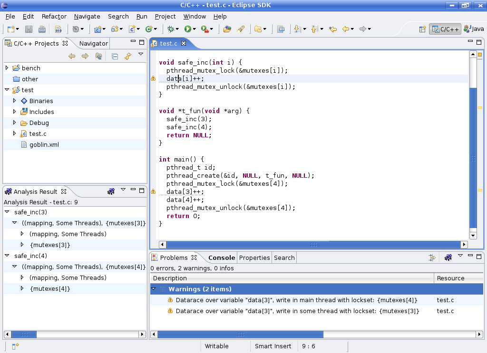

Overview of Goblint Features
Goblint is an analyzer of multi-threaded C programs. It computes a sound upper approximation of all possible thread interleavings using global invariants for shared data. The main application of this framework is for race detection. Goblint checks that all accesses to shared memory are protected by a common mutex.
The following screenshot illustrates the result of running the analyzer on a simple program with a static array of mutexes.
The safe incrementation function increases an element in the data array while acquiring the corresponding mutex; however, the main thread erroneously increments the third element while having locked the fourth lock.
As the example shows, Goblint not only tracks the flow of locks in and out of functions, but carefully considers the values and equalities between indexing variables to infer correlations. Additionally, Goblint is path-sensitive, so it deals with conditional locking schemes as well as possibly failing, interruptible and probing locking primitives. It also supports reader/writer locks.